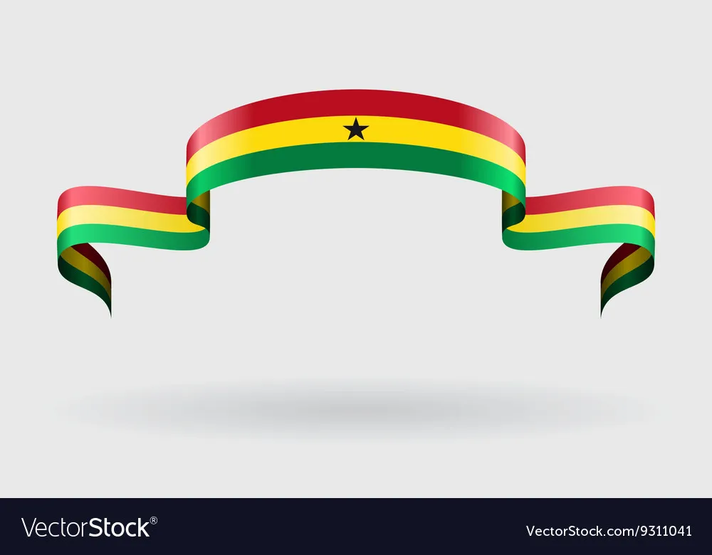

Akan names come from a traditional naming system for people from some west African countries such as Togo, Ghana, Ivory Coast.
Children's names are determined based on factors surrounding their birth e.g. day of the week they were born ,gender, order they were born, etc.
Here are the names according to day of the week and gender:
| Days | Boys | Girls |
|---|---|---|
| Sunday | Kwasi | Akosua |
| Monday | Kwadwo | Adwoa |
| Tuesday | Kwabena | Abenaa |
| Wednesday | Kwaku | Akua |
| Thursday | Yaw | Yaa |
| Friday | Kofi | Afua |
| Saturday | Kwame | Ama |
The purpose of this web application is to output a user's Akan name based on their date of birth and then gender.
Please fill out this form.